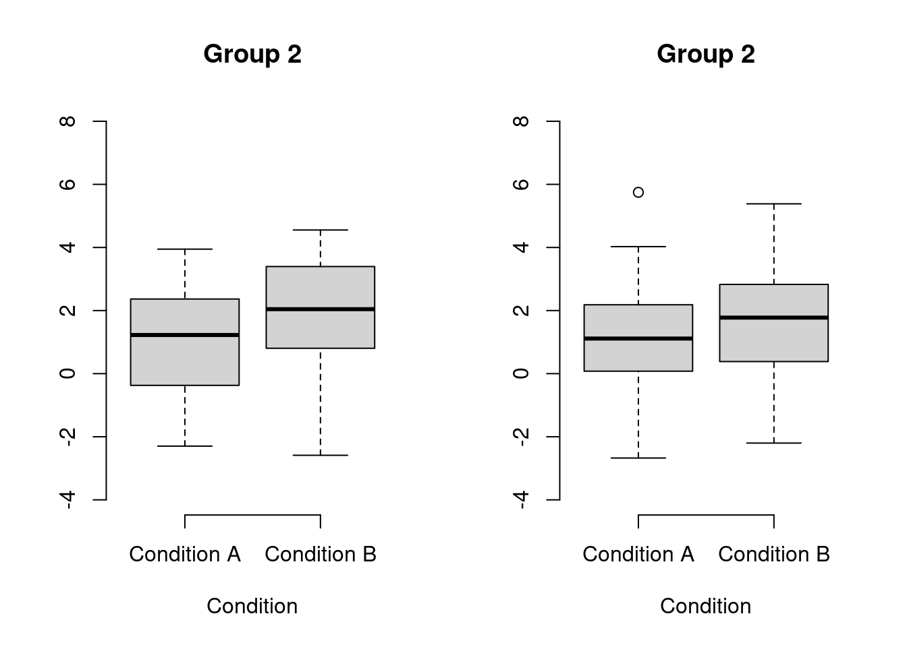
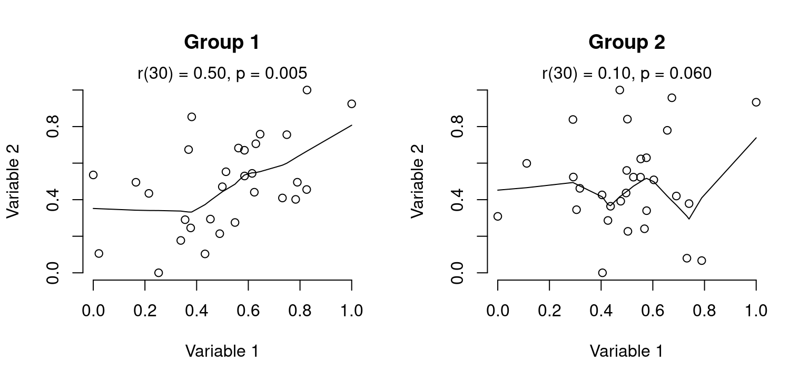
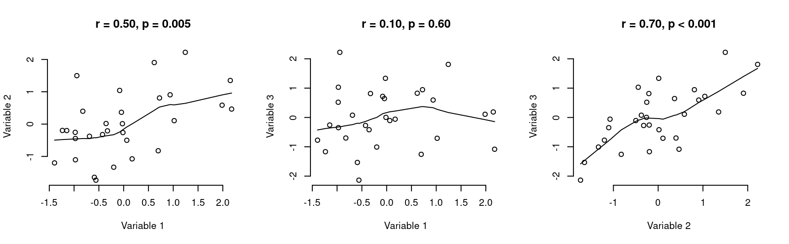
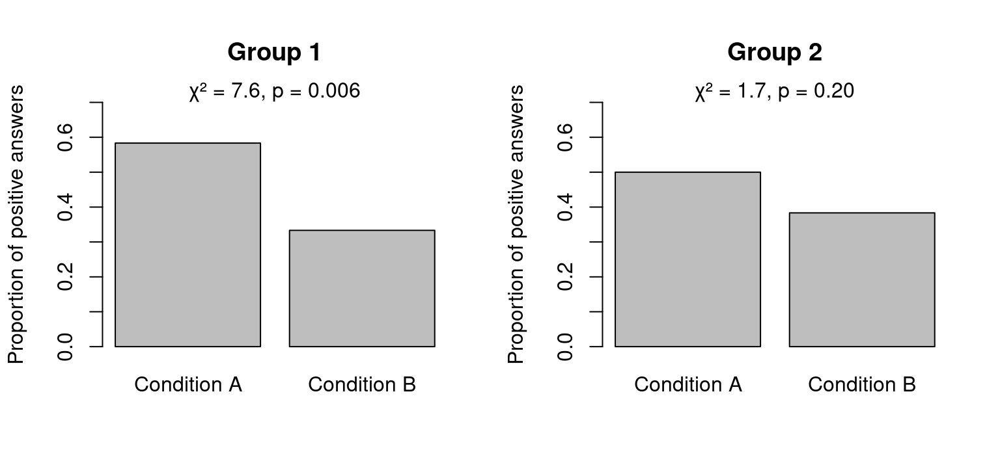

Assessing differences of significance
significance
R
When it comes to finding a powerful descriptive title for a research paper, it’s hard to top Gelman and Stern’s The difference between “significant” and “not significant” is not itself statistically significant. Yet, students and experienced researchers routinely draw substantial conclusions from effects being significant in one condition but not in the other.
Let’s say you recruit two groups – creatively named Group 1 and Group 2 – for an experiment. In a between-subjects design, half of the participants in each group are tested in a control condition (Condition A) and half in an experimental condition (Condition B). In Group 1, you observe what you’ve hoped for: a significant difference between Conditions A and B. In Group 2, however, the effect of Condition isn’t significant. Since you’re a creative researcher, your brain shifts into high gear and you can readily come up with a handful of interesting explanations as to why the effect can be observed in one group but not in the other. Perhaps the effect is moderated by the participants’ linguistic or cultural backgrounds, or perhaps the effect disappears in older participants?
But let’s pause for a moment. As Gelman & Stern’s title says, “the difference between ‘significant’ and ‘not significant’ is not itself statistically significant”. I take it that most researchers readily accept this when the p-values involved hover around the 0.05 threshold. For instance, with 25 observations, a correlation coefficient of 0.40 is statistically significant (p = 0.048), whereas a correlation coefficient of 0.39 isn’t (p = 0.061) – but it’s readily appreciated that the tiny difference between 0.39 and 0.40 probably isn’t meaningful. After all, 0.05 is an arbitrary threshold. But as Gelman & Stern explain with enviable clarity, even more dramatic differences aren’t necessarily significant either.
I think that researchers – both junior and more experienced ones – routinely read too much into comparisons of significance. To be more specific, I think they play the ‘moderator’ card too quickly and don’t truly consider the more prosaic alternative: chance. Obviously, the problem isn’t restricted to language-related research (see, e.g. Nieuwenhuis et al. 2011 on neuroscience). In this post, I discuss how to test whether the difference between a significant and a non-significant result really is significant for three types of tests: t-tests, correlation coefficients, and χ²-tests.
Differences between mean differences
Example 1: Two groups of 60 participants each are recruited. Half of the participants in each group are assigned to the control condition (Condition A), and half to the experimental condition (Condition B). The participants’ score on a continuous dependent variable is then compared between the conditions. In Group 1, the participants in Condition B (n = 30, M = 2.0, SD = 1.7) significantly outperform those in Condition A (n = 30, M = 1.0, SD = 1.6; t(58) = 2.35, p = 0.02). In Group 2, by contrast, the difference between participants in Condition B (n = 30, M = 1.6, SD = 1.8) and those in Condition A (n = 30, M = 1.2, SD = 1.7) isn’t even approximately significant (t(58) = 0.88, p = 0.38).
In this example, researchers familiar with ANOVA will probably recognise that we can’t jump to conclusions about moderator variables just yet: we need to establish whether the effect of Condition is significantly different in the two groups. In other words, we need to investigate the interaction between Condition and Group. The (fictitious) data for this example are stored in the dataframe df1, and the significance of the interaction term can easily be computed in R by running the anova command on a linear model with Group, Condition and their interaction as predictors.
summary(df1) Outcome Group Condition
Min. :-2.6731 Group 1:60 Condition A:60
1st Qu.: 0.1625 Group 2:60 Condition B:60
Median : 1.5222
Mean : 1.4500
3rd Qu.: 2.7186
Max. : 5.7476 anova(lm(Outcome ~ Group * Condition, df1))Analysis of Variance Table
Response: Outcome
Df Sum Sq Mean Sq F value Pr(>F)
Group 1 0.30 0.300 0.1036 0.74810
Condition 1 14.70 14.700 5.0777 0.02611 *
Group:Condition 1 2.70 2.700 0.9326 0.33619
Residuals 116 335.82 2.895
---
Signif. codes: 0 '***' 0.001 '**' 0.01 '*' 0.05 '.' 0.1 ' ' 1The effect of Condition, while significant in Group 1 and not significant in Group 2, does not statistically differ between the groups (F(1, 116) = 0.9, p = 0.34). Of course, that doesn’t mean that it doesn’t differ from group to group (‘not significant’ ≠ ‘no effect’), but we can straightforwardly account for the observed data without invoking moderator variables.
Differences between correlation coefficients
In linguistic research, we’re often more interested in comparing the strength of the relationship between two (more or less) continuous variables measured in different samples (e.g. language learners at different levels; different language families etc.). In this kind of enterprise, substantial conclusions are often drawn on the basis of significant vs. non-significant correlation coefficients (i.e. r).
Independent correlations
Example 2: We recruit two groups of 30 participants each (e.g. a group of French-speaking learners of German and a group of Dutch-speaking learners of German). All participants complete two tasks (e.g. an English vocabulary test and a German vocabulary test), and we want to establish whether performance on the two tasks is correlated in the two groups.
In the first group, we observe a significant correlation between the two variables (r = 0.50, p = 0.005), whereas the correlation isn’t remotely significant in the second group (r = 0.10, p = 0.60).

It’s tempting to think that such a large difference must be significant, but confidence intervals around correlation coefficients are ridiculously large. For instance, the 95% confidence interval of r in Group 1 is [0.17, 0.73], and that in Group 2 [-0.27, 0.44], so the confidence intervals overlap considerably. We need to test directly for the difference in the correlation coefficients.
In this example, we compare correlation coefficients between groups, i.e. the correlations are independent of one another. Note that the fact that the variables are named identically in the two groups is of no consequence. This is important since correlations can also be dependent, in which case a different analysis is needed (see below). The significance of the difference between two correlation coefficients is merely a function of (a) the correlation coefficients and (b) the sample sizes. In R, the test for such a comparison is implemented in the r.test() function in the psych package (to download it, type install.packages("psych") at the command prompt). For this test, which is based on the Fisher z-transformation, r.test() takes the arguments n (sample size in Group 1), n2 (sample size in Group 2), r12 (first correlation coefficient) and r34 (second correlation coefficient).
psych::r.test(n = 30, r12 = 0.50, n2 = 30, r34 = 0.10)Correlation tests
Call:psych::r.test(n = 30, r12 = 0.5, r34 = 0.1, n2 = 30)
Test of difference between two independent correlations
z value 1.65 with probability 0.1Even though thedifference between the correlation coefficients for both groups is quite large (r = 0.50 vs. 0.10), this difference isn’t itself statistically significant (z = 1.65, p = 0.10).
Dependent correlations
Example 3: Now imagine that rather than recruiting two groups of participants, we recruited just one group of 30 participants (e.g. Flemish learners of German). Each participant completes three tasks (e.g. an English, a French and a German vocabulary test), and we’re interested in comparing which of the two first tasks (English or French) is the better predictor of performance on the third task (German).
We observe a significant correlation between (say) English and German test performance (r = 0.50, p = 0.005) on the one hand, and a non-significant correlation between (say) French and German test performance (r = 0.10, p = 0.60) on the other hand.

This time, however, the correlations aren’t independent of one another: since the participants took all three tests, it’s likely that the two ‘independent’ variables correlate with one another, too. In this example, the correlation between English and French vocabulary test performance is r = 0.70. This dependence needs to be taken into account when testing the significance of the difference between r = 0.50 vs. 0.10. We can use the same r.test() function as above but now we have to specify r12 (correlation between independent variable 1 and the dependent variable), r13 (correlation between independent variable 2 and the dependent variable) as well as r23 (the intercorrelation between the independent variables):
psych::r.test(n = 30, r12 = 0.50, r13 = 0.10, r23 = 0.70)Correlation tests
Call:[1] "r.test(n = 30 , r12 = 0.5 , r23 = 0.7 , r13 = 0.1 )"
Test of difference between two correlated correlations
t value 3.38 with probability < 0.0022In this case, the difference between r = 0.50 vs. 0.10 is significant (t(28) = 3.38, p = 0.002). The outcome of this test crucially depends on the intercorrelation between the two independent variables, e.g.:
psych::r.test(n = 30, r12 = 0.50, r13 = 0.10, r23 = 0.1)Correlation tests
Call:[1] "r.test(n = 30 , r12 = 0.5 , r23 = 0.1 , r13 = 0.1 )"
Test of difference between two correlated correlations
t value 1.76 with probability < 0.09psych::r.test(n = 30, r12 = 0.50, r13 = 0.10, r23 = 0.8)Correlation tests
Call:[1] "r.test(n = 30 , r12 = 0.5 , r23 = 0.8 , r13 = 0.1 )"
Test of difference between two correlated correlations
t value 4.64 with probability < 7.9e-05Incidentally, the above also applies when comparing the strength of the relationship between one indepedent variable and two dependent variables. In addition, the intercorrelation should be taken into account even if it isn’t significant.
For a more detailed treatment of comparing correlation coefficients, see Olkin & Finn’s (1995) Correlation redux.
Differences between proportion differences
Example 4: We recruit two groups of 120 participants each and randomly assign half of the participants in each group to Condition A and half to Condition B. We present each participant with a dilemma, to which they must answer by either “yes” or “no”.
In Group 1, we find a significant effect of Condition: of the 60 participants in Condition A, 35 answered “yes”, whereas only 20 participants answered “yes” in Condition B (χ²(1) = 7.6, p = 0.006). In Group 2, 30 out of 60 participants in Condition A responded positively, and 23 out of 60 participants in Condition B did likewise – a non-significant difference (χ²(1) = 1.7, p = 0.20).

As in the examples above, it would be premature to start looking for moderator variables just yet. What we need to investigate is the interaction between Condition and Group. To that end, let’s first reconstruct the summary table with the number of positive and negative answers per Condition per Group (this, incidentally, can often be done even if you don’t have access to the raw data):
positive <- c(35, 30, 20, 23)
negative <- c(25, 30, 40, 37)
condition <- c("A", "A", "B", "B")
group <- c("1", "2", "1", "2")
df4 <- data.frame(positive = positive,
negative = negative,
condition = factor(condition),
group = factor(group))
df4 positive negative condition group
1 35 25 A 1
2 30 30 A 2
3 20 40 B 1
4 23 37 B 2We have all the information we need to compute the significance of the interaction: we can combine the columns with the positive and negative responses and feed it to a logistic regression model as the dependent variable; the independent variables are Condition and Group, which are allowed to interact with one another. (Sociolinguists already know a form of logistic regression (complemented with stepwise variable selection) as ‘variable rules analysis’ or Varbrul.) We first construct the model (a logistic/binomial generalized linear model, hence glm()), and then compute an analysis of deviance table for the three terms in the model (two main effects and the interaction). (Analysis of deviance is like ANOVA but for generalized models; here, we ask R to compute χ²-tests.)
mod.glm <- glm(cbind(positive, negative) ~ condition * group,
data = df4,
family = "binomial")
anova(mod.glm, test = "Chisq")Analysis of Deviance Table
Model: binomial, link: logit
Response: cbind(positive, negative)
Terms added sequentially (first to last)
Df Deviance Resid. Df Resid. Dev Pr(>Chi)
NULL 3 9.3634
condition 1 8.1968 2 1.1666 0.004196 **
group 1 0.0697 1 1.0968 0.791759
condition:group 1 1.0968 0 0.0000 0.294960
---
Signif. codes: 0 '***' 0.001 '**' 0.01 '*' 0.05 '.' 0.1 ' ' 1While the effect of Condition is significant in Group 1 and not in Group 2, the Condition effect isn’t significant different between Groups 1 and 2 (χ²(1) = 1.1, p = 0.29).
Summary
Most quantitatively-oriented researchers are familiar with investigating interaction effects when comparing mean differences. For the same reason that we’re not content with computing two t-tests and comparing their p-values, comparing the p-values associated with correlation coefficients or χ²-tests doesn’t suffice. It’s questionable to draw strong conclusions merely on the basis of an effect being significant in one condition/group/study and not in the other – even when the p-values differ substantially.
Software versions
devtools::session_info()─ Session info ───────────────────────────────────────────────────────────────
setting value
version R version 4.3.1 (2023-06-16)
os Ubuntu 22.04.3 LTS
system x86_64, linux-gnu
ui X11
language en_US
collate en_US.UTF-8
ctype en_US.UTF-8
tz Europe/Zurich
date 2023-08-26
pandoc 3.1.1 @ /usr/lib/rstudio/resources/app/bin/quarto/bin/tools/ (via rmarkdown)
─ Packages ───────────────────────────────────────────────────────────────────
package * version date (UTC) lib source
cachem 1.0.6 2021-08-19 [2] CRAN (R 4.2.0)
callr 3.7.3 2022-11-02 [1] CRAN (R 4.3.1)
cannonball 0.1.1 2023-06-21 [1] Github (janhove/cannonball@fe70eff)
cli 3.6.1 2023-03-23 [1] CRAN (R 4.3.0)
crayon 1.5.2 2022-09-29 [1] CRAN (R 4.3.1)
devtools 2.4.5 2022-10-11 [1] CRAN (R 4.3.1)
digest 0.6.29 2021-12-01 [2] CRAN (R 4.2.0)
ellipsis 0.3.2 2021-04-29 [2] CRAN (R 4.2.0)
evaluate 0.15 2022-02-18 [2] CRAN (R 4.2.0)
fastmap 1.1.0 2021-01-25 [2] CRAN (R 4.2.0)
fs 1.5.2 2021-12-08 [2] CRAN (R 4.2.0)
glue 1.6.2 2022-02-24 [2] CRAN (R 4.2.0)
htmltools 0.5.5 2023-03-23 [1] CRAN (R 4.3.0)
htmlwidgets 1.6.2 2023-03-17 [1] CRAN (R 4.3.1)
httpuv 1.6.11 2023-05-11 [1] CRAN (R 4.3.1)
jsonlite 1.8.7 2023-06-29 [1] CRAN (R 4.3.1)
knitr 1.39 2022-04-26 [2] CRAN (R 4.2.0)
later 1.3.1 2023-05-02 [1] CRAN (R 4.3.1)
lattice 0.21-8 2023-04-05 [4] CRAN (R 4.3.0)
lifecycle 1.0.3 2022-10-07 [1] CRAN (R 4.3.0)
magrittr 2.0.3 2022-03-30 [1] CRAN (R 4.3.0)
MASS 7.3-60 2023-05-04 [4] CRAN (R 4.3.1)
memoise 2.0.1 2021-11-26 [2] CRAN (R 4.2.0)
mime 0.10 2021-02-13 [2] CRAN (R 4.0.2)
miniUI 0.1.1.1 2018-05-18 [1] CRAN (R 4.3.1)
mnormt 2.1.1 2022-09-26 [1] CRAN (R 4.3.1)
nlme 3.1-162 2023-01-31 [4] CRAN (R 4.2.2)
pkgbuild 1.4.2 2023-06-26 [1] CRAN (R 4.3.1)
pkgload 1.3.2.1 2023-07-08 [1] CRAN (R 4.3.1)
prettyunits 1.1.1 2020-01-24 [2] CRAN (R 4.2.0)
processx 3.8.2 2023-06-30 [1] CRAN (R 4.3.1)
profvis 0.3.8 2023-05-02 [1] CRAN (R 4.3.1)
promises 1.2.0.1 2021-02-11 [1] CRAN (R 4.3.1)
ps 1.7.5 2023-04-18 [1] CRAN (R 4.3.1)
psych 2.3.6 2023-06-21 [1] CRAN (R 4.3.1)
purrr 1.0.1 2023-01-10 [1] CRAN (R 4.3.0)
R6 2.5.1 2021-08-19 [2] CRAN (R 4.2.0)
Rcpp 1.0.11 2023-07-06 [1] CRAN (R 4.3.1)
remotes 2.4.2 2021-11-30 [2] CRAN (R 4.2.0)
rlang 1.1.1 2023-04-28 [1] CRAN (R 4.3.0)
rmarkdown 2.21 2023-03-26 [1] CRAN (R 4.3.0)
rstudioapi 0.14 2022-08-22 [1] CRAN (R 4.3.0)
sessioninfo 1.2.2 2021-12-06 [2] CRAN (R 4.2.0)
shiny 1.7.4.1 2023-07-06 [1] CRAN (R 4.3.1)
stringi 1.7.12 2023-01-11 [1] CRAN (R 4.3.1)
stringr 1.5.0 2022-12-02 [1] CRAN (R 4.3.0)
urlchecker 1.0.1 2021-11-30 [1] CRAN (R 4.3.1)
usethis 2.2.2 2023-07-06 [1] CRAN (R 4.3.1)
vctrs 0.6.3 2023-06-14 [1] CRAN (R 4.3.0)
xfun 0.39 2023-04-20 [1] CRAN (R 4.3.0)
xtable 1.8-4 2019-04-21 [1] CRAN (R 4.3.1)
yaml 2.3.5 2022-02-21 [2] CRAN (R 4.2.0)
[1] /home/jan/R/x86_64-pc-linux-gnu-library/4.3
[2] /usr/local/lib/R/site-library
[3] /usr/lib/R/site-library
[4] /usr/lib/R/library
──────────────────────────────────────────────────────────────────────────────